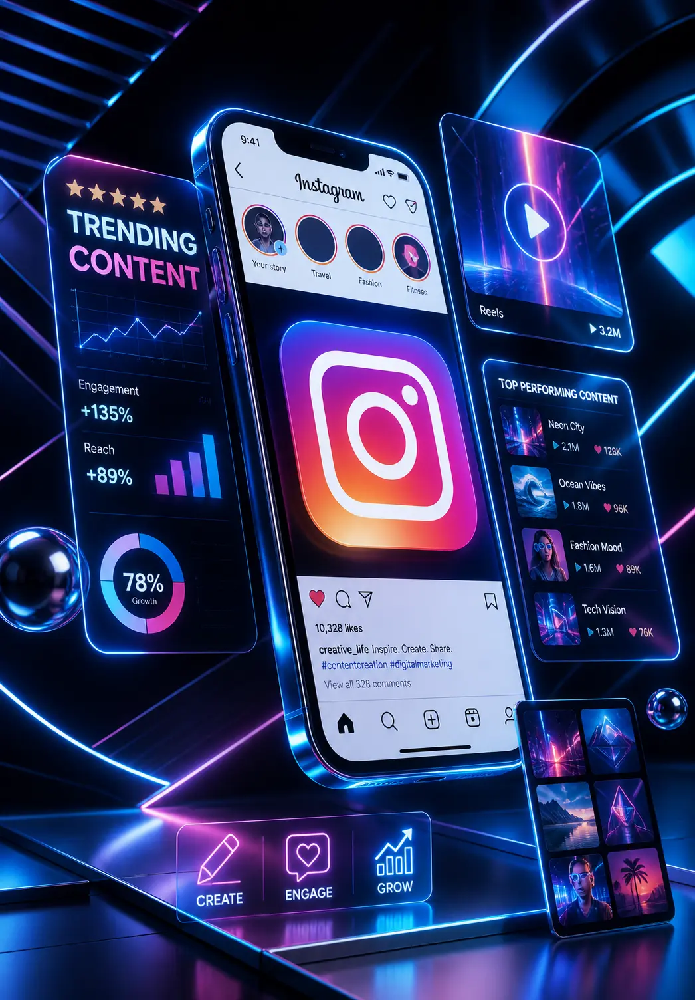

Positioning, campaign architecture, landing page logic, and reporting systems aligned before media spend starts.
Precision Growth
Sharper Acquisition
Conversion Systems
Campaign Clarity
/ Strategy-led acquisition
We turn positioning, paid acquisition, landing pages, and reporting into one measurable growth system.
See the system
01/ About NewWavetrhy
Helping brands shape clearer demand.
Positioning, campaign logic, and conversion pages working from one
strategy.
Marketing systems shaped for measurable acquisition, not
disconnected channel activity.
Our Services* Our Services* Our Services*
Growth
Strategy
Structured market positioning, acquisition planning, and growth priorities designed to make every campaign work harder.
Learn MoreCreative
Content
Campaign ideas, content systems, and creative assets built to support measurable acquisition instead of decorative output.
Learn More
Social
Media
Social campaigns shaped around audience signals, message testing, creative angles, and channel-specific execution.
Learn MoreSmart
Advertising
Paid acquisition systems across search and social with clearer tracking, sharper landing pages, and useful reporting.
Learn More
02/ What we do
Smart marketing
Smart marketing
for growth
Content pillars, ad concepts, channel assets, and creative testing frameworks built around measurable acquisition.
Social publishing, paid social support, audience learning, and feedback loops that turn attention into clearer demand.
Search and social campaigns supported by clean tracking, useful dashboards, and practical optimization decisions.
Creative solutions that convert
Qualified audience actions shaped through clearer campaign systems.
Creative assets and landing page variants built for measurable testing.
Optimization decisions supported by tracking, reporting, and campaign review.
03/ Why choose us
Smart strategies that
Real results
Smart
True impact
Creative
Clear growth
Intelligence
Lasting success
Trusted
Smart strategies that
truly convert
Smart
Strategy
Delivering targeted solutions for measurable growth.
Creative
Thinking
Designing campaigns that inspire audiences.
Intelligence
Powered
Optimizing performance through data insights.
Trusted
Partner
Building trust through long-term commitment.
Featured Work* Featured Work* Featured Work*
04/ Real testimonials
Client feedback that
Client feedback that
truly matters
05/ How we work
Smart process behind successful digital campaigns
Our process connects research, strategy, creative execution, and optimization so marketing decisions are made with context instead of guesswork.
Join Us NowResearch and discovery phase
Understanding client goals, audience behavior, market signals, and the acquisition gaps that should shape the strategy.
Strategic planning development
Building the campaign architecture, landing page direction, message hierarchy, and measurement plan before launch.
Creative execution and optimization
Producing campaign assets, launching tests, reading performance patterns, and improving the system through clear reporting.
06/ Join us now
Successful partnerships require trust, transparency and aligned business goals
Our clients do not just hire us for campaign execution. They stay because we bring clarity, speed, and measurable decision-making to every stage of growth.
Start A Project